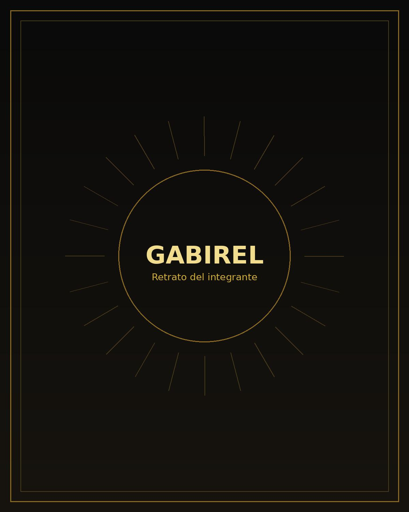
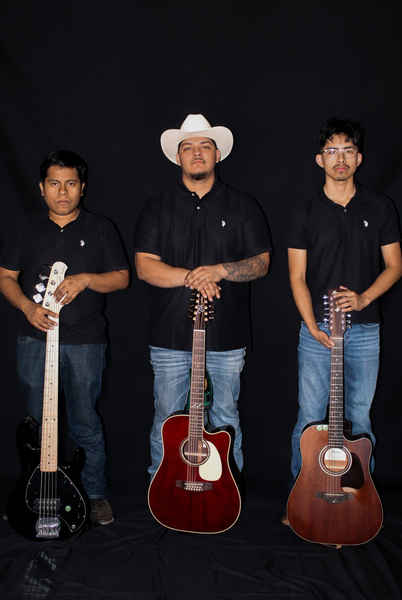
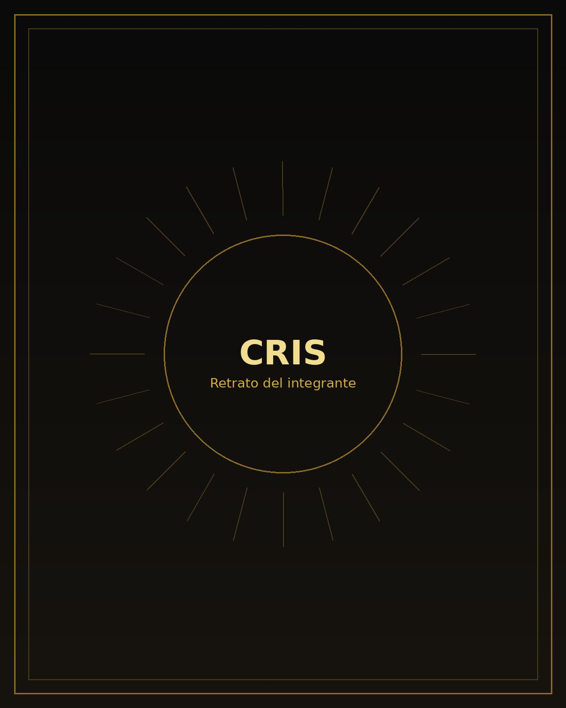

Gabirel
Voz principal · Guitarra
Al frente del grupo, Gabirel lleva la melodía y la historia de cada canción, marcando el carácter de Los Rurales con voz y guitarra.
Desde Des Moines, Iowa
Una voz, dos guitarras y un bajo. Tres músicos tocando regional mexicano con cercanía, respeto por la tradición y ganas de hacer cantar a la gente.

La historia
Los Rurales De La Sierra nace en Des Moines con una idea clara: tocar música regional mexicana de una forma directa, cálida y hecha para disfrutarse en vivo. El grupo se apoya en el diálogo entre las guitarras, una base de bajo sólida y una voz principal que mantiene la canción al frente.
El repertorio se mueve alrededor del sierreño y los corridos, con espacio para adaptar la energía a cada ocasión. Hay noches para escuchar de cerca y cantar cada verso, y otras donde lo importante es mantener la fiesta andando. Los Rurales buscan leer el ambiente y tocar para la gente que tienen enfrente.
Más que montar un espectáculo distante, la intención es crear una presentación que se sienta familiar: música bien tocada, trato sencillo y una conexión real con quienes invitan al grupo a ser parte de su celebración.
El grupo

Voz principal · Guitarra
Al frente del grupo, Gabirel lleva la melodía y la historia de cada canción, marcando el carácter de Los Rurales con voz y guitarra.

Segunda guitarra
Cris completa el tejido de guitarras con acompañamientos, respuestas y detalles que le dan movimiento y cuerpo al sonido del trío.
Bajo
Jesus sostiene el fondo del grupo con un bajo firme y musical, dejando espacio para que las guitarras respiren sin perder el empuje.
Donde tocamos
Nos adaptamos a celebraciones donde la música regional mexicana forma parte del ambiente y la gente quiere tenerla cerca.
Hablemos de tu fecha